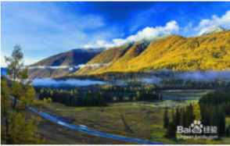
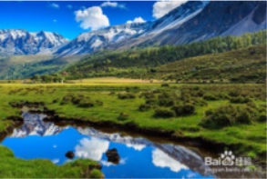
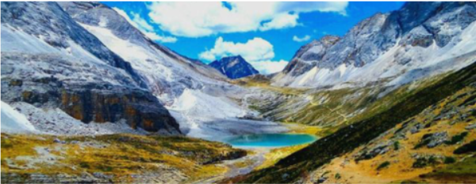

四川· 稻城亚丁
这里被誉为“香格里拉之魂”和“最后的香格里拉”，被国际友人誉为“水蓝色星球上的最后一片净土”，是摄影爱好者的天堂。 圣洁美丽的雪域神山，五彩斑斓的高山彩林，连绵起伏的高寒草原、秀美恬适的高山湖泊，丰富迷人的藏族风情，无一不吸引着人们的到来。 从稻城前往亚丁的路上会穿越川西风光最美的彩色林带，领略神奇的四季更替；洛绒牛场上的移动牧群点缀在一片金黄之中，犹如浮动的云朵。来这里，来一场秋天的童话。
  